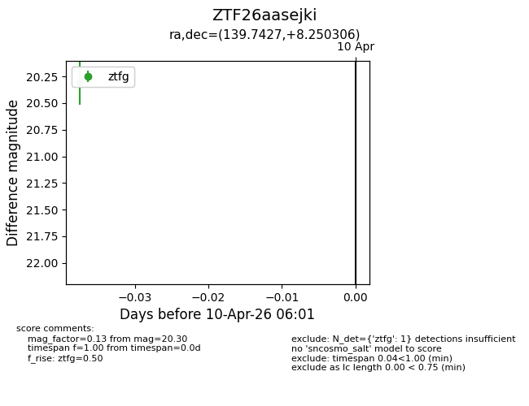
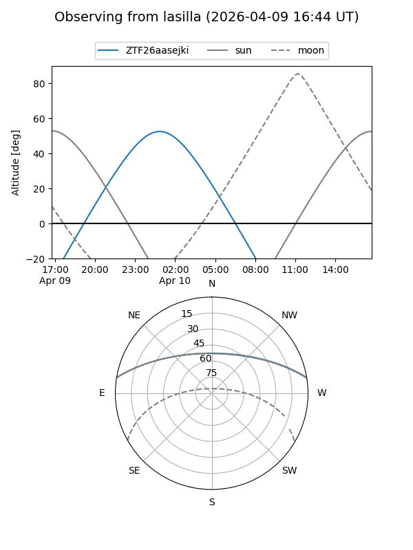
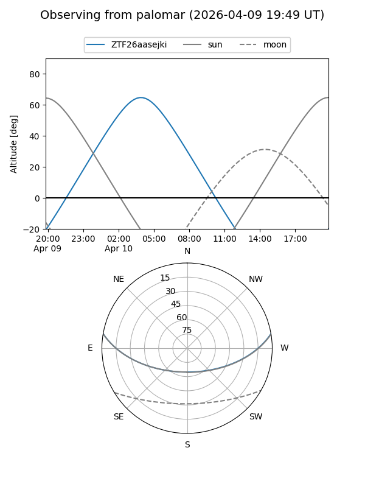

ZTF26aasejki
Target ZTF26aasejki at 2026-04-10 06:11
Aliases and brokers:
FINK: link
Lasair: link
ALeRCE: link
alt names
ZTF26aasejki (ztf,fink_ztf)
Coordinates:
equatorial (ra, dec) = 139.7427,+8.25031
equatorial (HMS+DMS) = 09:18:58.24,+08:15:01.10
galactic (l, b) = (223.1812,+36.44583)
Flags:
Photometry:
last ztfg=20.30
1 ztfg detections
Lightcurve

Visibility


Additional plots